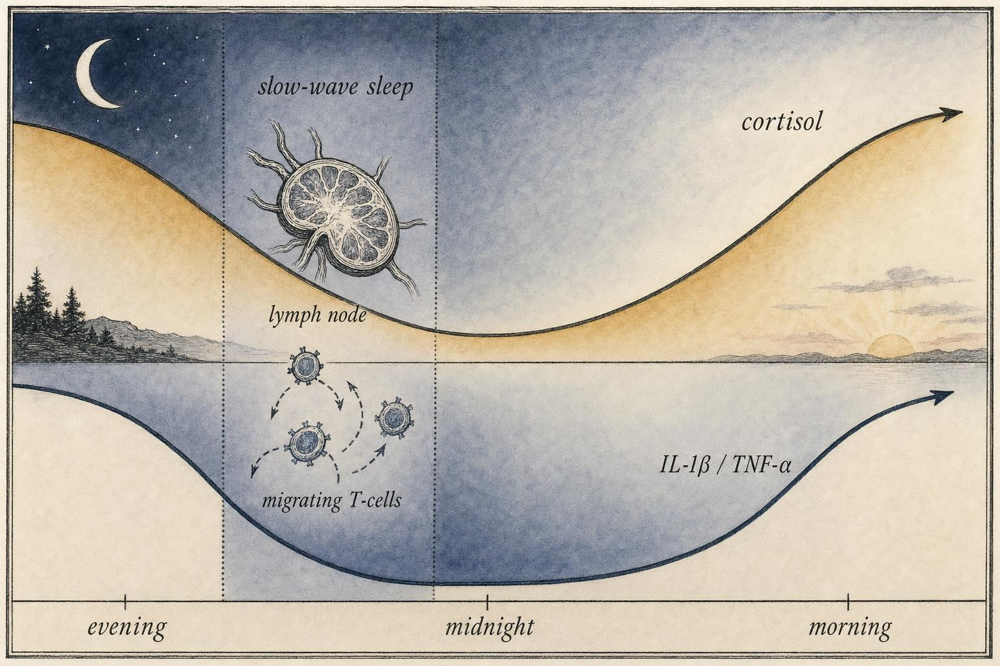
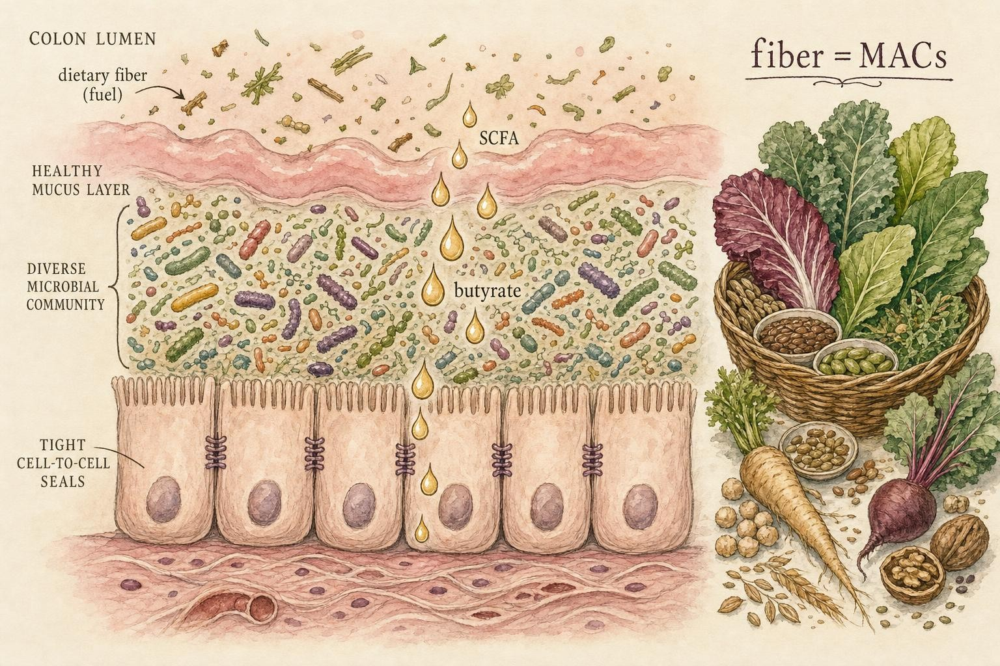

Sleep, Gut, and Plate: The Everyday Modulators
Three levers you pull every day , and the mechanisms behind each.
A volunteer arrives at a research clinic at 8 p.m. and is fitted with electrodes, an intravenous line, and a wrist actigraph. Over the next several hours, technicians draw blood at intervals while the electroencephalogram traces the descent into deep, slow-wave sleep. The blood tells a story that has nothing to do with rest in the folk sense. As the volunteer sinks into the deepest stage of the night, the count of naïve T cells in circulation drops , not because those cells are dying, but because they are leaving the bloodstream and homing to lymph nodes, where the machinery of immune memory does its quiet consolidation. Meanwhile, the pro-inflammatory cytokines that peak in early night are climbing. The immune system, it turns out, keeps a schedule, and that schedule is written partly in sleep (Besedovsky et al., 2011).
This is the chapter where the course machinery meets the ordinary day. For seven chapters we have built the cellular and molecular grammar of defense, fire, and balance , cytokines, cortisol, the resolution program of specialized pro-resolving mediators, the redox economy of the cell. Now we ask a blunt question: what everyday things actually move those systems? Three answers dominate, and all three are things you do without thinking. How you sleep. What lives in your gut. What you put on your plate.
Why sleep is not the absence of activity
The naïve intuition treats sleep as downtime , the body idling while the brain reboots. That framing is wrong in a way that matters for immunology. Sleep is an active, regulated physiological state during which specific immune processes are not merely permitted but preferentially scheduled. To see why, we need to refresh two ideas from earlier chapters and then watch them interlock.
Sleep architecture: the stages that structure the night
Before tracing the immune consequences, it helps to know what a night of sleep actually contains, because sleep is not one uniform state. Polysomnography, the recording of brain waves, eye movements, and muscle tone during sleep, divides the night into two broad categories. Non-rapid eye movement (NREM) sleep is subdivided into stages N1 and N2, both relatively light, and N3, the deep slow-wave sleep (SWS) marked by large, slow delta waves on the electroencephalogram (EEG), the recording of the brain's electrical activity from scalp electrodes. Rapid eye movement (REM) sleep, by contrast, shows fast, low-amplitude brain waves that resemble wakefulness, darting eye movements, and a near-total loss of skeletal muscle tone, and it is the stage most associated with vivid dreaming. A healthy adult night cycles through these stages in blocks of roughly ninety minutes, repeating four to six times, but the composition of each cycle shifts across the night: SWS dominates the first half of the night and largely disappears by the early morning hours, while REM sleep is sparse early on and progressively lengthens toward morning. This asymmetry matters for immunology. Because the low-cortisol, SWS-rich window sits in the first half of the night, the immune events described below cluster there, which is one reason that going to bed very late, or being woken repeatedly in the first few hours of sleep, can blunt immune function even when total sleep time looks adequate on paper.
Recall the hypothalamic-pituitary-adrenal (HPA) axis from Chapter 3: the stress circuit whose end product is cortisol, a glucocorticoid hormone that, among many jobs, suppresses inflammatory gene transcription. Cortisol is not secreted at a constant rate. It follows a strong daily rhythm , lowest in the first half of the night, then rising sharply to peak shortly after waking. Recall also from Chapter 6 the two workhorse pro-inflammatory cytokines interleukin-1β (IL-1β) and tumor necrosis factor-α (TNF-α), the alarm signals that raise the inflammatory tone of a tissue. These, too, are rhythmic, and their rhythm is roughly the mirror image of cortisol's: they rise in the evening and early night, precisely when cortisol's restraining hand is at its lightest.
Sleep exploits this window. During early nocturnal slow-wave sleep (SWS) , the deepest, most synchronized stage, marked by high-amplitude delta waves on the EEG , the low-cortisol, low-catecholamine milieu creates permissive conditions for adaptive immune activity. Besedovsky and colleagues (2011, 2019) document a coherent set of changes in this window: production of pro-inflammatory and T-helper-1 cytokines such as IL-12 rises; the count of naïve and central-memory T cells in blood falls as these cells extravasate toward lymph nodes; and the interaction between antigen-presenting cells (APCs) and T-helper cells is enhanced. The result is a nightly rehearsal of adaptive immunity , cells trafficking to the lymphoid theaters where antigen is presented and long-term memory is written.
Immune memory and neural memory: the same night shift
One of the most striking claims in this literature is a structural parallel. Neuroscience has long held that slow-wave sleep supports the consolidation of declarative memory , the reactivation and stabilization of the day's newly encoded traces into durable form. Besedovsky et al. (2011) propose that the immune system runs an analogous process on the same schedule. Just as hippocampal traces are replayed and transferred to cortical storage during SWS, freshly encountered antigenic information is consolidated into immunological memory , the expansion and differentiation of antigen-specific T cells into long-lived memory populations. In both systems, a brief window of encoding during waking is followed by a nocturnal consolidation phase. The metaphor is more than poetic: it predicts, correctly, that sleep after antigen exposure improves the durability of the response.
The prediction is testable and has been tested. Across several vaccination studies reviewed by Besedovsky et al. (2019), sleep in the hours after immunization is associated with stronger and more durable antibody responses; experimental sleep deprivation on the night after vaccination blunts them. The effect sizes are non-trivial and, in at least one hepatitis A study, remained detectable a full year later. Sleep is, in a real mechanistic sense, part of the vaccination.
Two specific experiments make the point concrete. Spiegel, Sheridan, and Van Cauter (2002) restricted healthy young men to four hours in bed for four consecutive nights before giving them an influenza vaccine, then compared their antibody response to that of men who slept normally. Ten days after vaccination, the sleep-restricted group had produced substantially less than half the antibody titer of the well-rested group, a difference measured against the same vaccine, the same schedule, and no other manipulated variable. In a separate line of work using naturally occurring variation rather than experimental restriction, Cohen and colleagues (2009) monitored healthy volunteers' sleep by diary and wrist actigraphy for a week, then deliberately exposed them to a common-cold-causing rhinovirus under quarantine conditions. People who averaged less than seven hours of sleep in the preceding week were about three times more likely to develop a confirmed cold than those averaging eight hours or more, and the association held after statistically accounting for age, stress, smoking, and other health habits. Neither study proves that sleep alone determines infection outcomes in ordinary life, where habitual sleep, stress, and diet are tangled together, but together they show a dose-relevant, mechanistically coherent effect: less sleep, less durable adaptive immunity, more susceptibility to a real pathogen.
Sleep and innate immunity: natural killer cells on the night shift
The adaptive arm is not the only one affected. Natural killer (NK) cells, the innate lymphocytes introduced in Chapter 1 that patrol for virus-infected and tumor cells without needing prior antigen exposure, are also sensitive to sleep loss. In an early and frequently replicated experiment, Irwin and colleagues (1996) kept healthy adults awake from 3 a.m. to 7 a.m., a partial sleep deprivation far milder than an all-nighter, and found that NK cell activity, the capacity of these cells to kill target cells in a laboratory assay, dropped by roughly 30 percent the following day compared with a fully rested night, an effect that reversed after recovery sleep. Because NK cells provide an early line of defense against viral infection before the slower adaptive response has ramped up, a transient dip in their activity after a short night is one plausible mechanistic bridge between "I didn't sleep well" and "I got sick this week," alongside the adaptive and barrier-level mechanisms already described.

The nocturnal cross-over: cortisol falls as inflammatory cytokines rise, opening a permissive window for adaptive immunity." data-image-idx="0" style="display:block;max-width:100%;max-height:75vh;height:auto;width:auto;margin:0 auto;cursor:pointer;">Sleep loss as a chronic stressor
If normal sleep is an immune asset, sleep loss is not a neutral withdrawal of that asset , it actively pushes the same pathways in the wrong direction. Here the mechanism links directly to Chapter 3's stress physiology. Curtailed or fragmented sleep behaves like a stressor: it flattens and shifts the cortisol rhythm, raises evening cortisol, and activates the sympathetic nervous system, elevating circulating catecholamines (norepinephrine and epinephrine). Both of these signals feed into the master inflammatory transcription factor NF-κB, the molecular switch introduced in Chapter 6 that turns on inflammatory gene programs (Irwin, 2019).
Irwin (2019) traces the downstream consequences with precision. Experimental sleep deprivation and, more tellingly, chronic partial sleep restriction (the 5-to-6-hour nights that characterize modern life) drive measurable increases in NF-κB activation and in the systemic inflammatory markers it controls , IL-6, TNF-α, and C-reactive protein. The elevation is modest per night but it is the signature of low-grade chronic inflammation: not the roaring, self-resolving fire of an acute infection, but a persistent smoulder. This smoulder is precisely the inflammatory phenotype implicated in cardiovascular disease, insulin resistance, and depression , the diseases where "inflammation" appears as a risk factor rather than a symptom.
Circadian disruption and the immune clock
Sleep timing, not just sleep amount, matters because immune cells keep their own clocks. The circadian rhythm is the roughly 24-hour internal cycle, generated by a master clock in the brain's suprachiasmatic nucleus and synchronized to the external light-dark cycle, that governs the timing of countless physiological processes, cortisol secretion among them. What is less widely appreciated is that the same clockwork exists inside individual immune cells. Molecular clock genes, among them BMAL1 and CLOCK, form interlocking transcription-translation feedback loops that oscillate on a roughly daily rhythm within monocytes, macrophages, and lymphocytes, and that rhythm directly gates when those cells traffic through tissues, respond to pathogens, and express inflammatory genes (Scheiermann et al., 2018). In effect, a leukocyte is not a context-free responder; it is more or less trigger-happy depending on the hour of its own internal clock.
This is why circadian misalignment, the mismatch between the internal clock and the actual timing of sleep, light, and meals that characterizes shift work, jet lag, and chronically irregular schedules, carries immune consequences distinct from sleep loss alone. Shift workers, whose sleep timing is repeatedly out of phase with their internal clock even when total sleep duration is not drastically short, show elevated rates of the same low-grade inflammatory and metabolic diseases associated with chronic sleep restriction (Scheiermann et al., 2018). The mechanistic point to carry forward is narrow but important: "enough sleep" and "sleep at the right circadian time" are separate variables, and both feed into the same NF-κB-linked inflammatory circuitry.
Bidirectionality: sickness makes you sleep, sleep fights sickness
The sleep-immune relationship runs both ways, and the reverse arrow explains a universal experience. When you fight an infection, you feel an overwhelming urge to sleep. This is not incidental; it is programmed. The same cytokines that mediate the immune response , IL-1β and TNF-α prominent among them , are also somnogenic: they act on the brain to increase sleep duration and intensify slow-wave sleep (Besedovsky et al., 2019). The "sickness behavior" of malaise and hypersomnia is the immune system commandeering the sleep system to create the very conditions under which the adaptive response consolidates best. IL-1β and TNF-α thus serve as bidirectional mediators, bridging sleep architecture and inflammatory signaling in both directions (Irwin, 2019).
This bidirectionality has a dark side. If inflammatory cytokines drive sleep, then chronic inflammation , from obesity, from psychological stress, from an inflamed gut, all themes of this course , can degrade sleep quality, which in turn raises inflammation further. Irwin (2019) emphasizes how chronic social stressors set exactly this loop in motion: stress fragments sleep, fragmented sleep dysregulates antiviral and inflammatory responses, and the resulting inflammatory tone feeds back onto the brain. The loop is a vicious circle in the literal sense, and it is one place where the course's separate chapters collapse into a single tangled knot.
Sleep and the circadian system are strong regulators of immunological processes… the immune system in turn shapes the amount and quality of sleep.
Besedovsky, Lange, & Born (2019), Physiological Reviews
Two cautions keep this honest. First, most controlled sleep-deprivation experiments are short , a night or a few nights , and generalizing to years of chronic short sleep requires care. Second, the inflammatory changes measured are statistical shifts at the population level; they do not license telling any individual that one bad night has "damaged" their immunity. What the evidence does support is a directional, mechanistic claim: habitually short and fragmented sleep tilts the system toward inflammation and blunts adaptive responses, and it does so through the very cortisol, catecholamine, cytokine, and NF-κB pathways we have already built.
The gut microbiome, built from first principles
Turn now to the second lever, which lives about a meter of coiled tube away. The human large intestine houses one of the densest microbial communities on Earth , on the order of tens of trillions of bacterial cells, plus archaea, fungi, and viruses, collectively called the gut microbiota. The term microbiome refers, strictly, to that community together with its collective genes and metabolic capabilities, though the two words are often used interchangeably. This is not a passive population of freeloaders. It is a metabolic organ that we are not born with and that we assemble over the first years of life, and it is in constant molecular conversation with our immune system.
Why should microbes calibrate immunity at all? Consider the immune system's central computational problem, which the whole course circles: distinguishing threats worth attacking from harmless material that should be tolerated. The gut is where this problem is hardest. It is the body's largest interface with the outside world , a surface area, if unfolded, roughly the size of a badminton court , and it is coated with trillions of microbes and awash in food antigens, almost none of which should trigger an inflammatory attack. An immune system that overreacted here would destroy the gut lining and starve its host. The tissue solved this by co-evolving with its microbes: the microbiota trains and tunes the immune system, and the immune system in turn shapes which microbes are tolerated.
Assembly of the microbiome across the lifespan
The gut microbiota is not present at any meaningful density before birth; it is assembled afterward, and the sequence of that assembly shapes the mature community. The mode of delivery provides an early seeding event: infants delivered vaginally acquire an initial community that resembles the maternal vaginal and gut flora, while infants delivered by cesarean section acquire a community that more closely resembles skin flora, a difference that narrows but does not always disappear over the following months. Breast milk contributes its own engineered input in the form of human milk oligosaccharides (HMOs), complex sugars that the infant cannot digest but that selectively feed beneficial early colonizers, particularly certain Bifidobacterium species. As solid foods are introduced and diversify, the microbiota diversifies with them, and by roughly the third to fifth year of life the community begins to resemble, in overall structure, that of an adult, after which it remains relatively stable through adulthood in the absence of major disruption.
That stability is worth dwelling on because it cuts against a common marketing claim. A mature, adult gut microbiota is resilient to small daily perturbations but is not effortlessly reprogrammed. A single course of probiotics or a week of "detox" eating does not rebuild a community that took years to assemble; the Microbiome Garden widget's contrast between a diverse, resilient community and a depleted, fragile one after a disturbance is modeling exactly this property. Large, lasting shifts in adult microbiota composition generally require sustained changes in diet, or major disruptions such as antibiotic courses or severe illness, sustained over comparably long periods.
Gut-associated lymphoid tissue: immunity's largest campus
The physical site of this training is the gut-associated lymphoid tissue (GALT), the collection of immune structures embedded in and beneath the intestinal wall. It includes organized lymphoid follicles called Peyer's patches, specialized epithelial M cells that sample luminal contents and hand antigen to underlying immune cells, and a large resident population of lymphocytes in the connective tissue layer, the lamina propria. More immune cells reside in and around the gut than anywhere else in the body. This is where the microbiota exerts its calibrating influence , for example, by promoting the differentiation of regulatory T cells (Tregs), the tolerance-enforcing lymphocytes from Chapter 2 that suppress inappropriate inflammation. A well-trained gut is one that has learned, through constant microbial tutelage, where the "off" switches belong.
The training is not only toward tolerance. Certain resident bacteria push the immune system to build offensive capability in a controlled, targeted way. A well-studied example, established mainly in animal models, is segmented filamentous bacteria, organisms that attach tightly to the small-intestinal epithelium and drive local differentiation of T-helper 17 (Th17) cells, an inflammatory T-cell subset introduced in Chapter 2 that defends against extracellular bacteria and fungi at mucosal surfaces. The lesson is that GALT does not simply dial tolerance up uniformly; it calibrates a mixture of regulatory and effector responses, tuned to which microbes are present, so that the gut can stay quiet toward the harmless majority while still mounting an offense against genuine invaders. GALT also runs its own antibody factory: B cells in the Peyer's patches undergo class switching, a process introduced in Chapter 2 by which a B cell changes the antibody type it produces, here favoring secretory IgA, and the resulting plasma cells seed the lamina propria to supply the mucus layer described below. Some of this IgA production requires T-cell help in the classic germinal-center pathway; some proceeds through T-cell-independent routes that respond directly to microbial signals, giving the gut both a fast, broad first-response antibody coating and a more refined, antigen-specific one.
Dysbiosis: when the community turns against the host
Dysbiosis is the general term for a microbial community shifted away from the composition associated with health, typically some combination of reduced overall diversity, loss of key beneficial taxa such as butyrate producers, and relative overgrowth of opportunistic organisms sometimes called pathobionts, meaning ordinarily harmless residents that become harmful when the community around them is disturbed. Dysbiosis is not a single disease state but a description of an unhealthy ecological configuration, and several everyday exposures can produce it. Antibiotic courses are the most abrupt cause: broad-spectrum antibiotics do not distinguish the infection they are prescribed for from the thousands of beneficial species collaterally affected, and a single course can measurably reduce diversity for weeks to months, occasionally longer. A sustained low-fiber, high-fat, high-refined-sugar dietary pattern produces a slower version of the same effect, starving fiber-fermenting species of substrate and allowing less fastidious organisms to dominate. Enteric infections and chronic psychological stress, which alters gut motility and secretions through the same sympathetic and HPA-axis pathways discussed for sleep, can each tilt the community as well. Whatever the trigger, the downstream consequence is consistent with the mechanisms already introduced: less microbial diversity generally means less SCFA output, a thinner and more permeable barrier, and a GALT tilted away from tolerance and toward reactivity, closing the loop back to the LPS-driven inflammation described next.
The barrier and what crosses it
Everything about the gut's immune diplomacy depends on a barrier that keeps microbes in the lumen and out of the tissue. Camilleri and colleagues (2023) describe this barrier not as a single wall but as a multilayer, dynamic system, and the architecture is worth learning from the outside in.
First comes the mucus layer: a viscous gel secreted by goblet cells, organized into an outer layer where commensal bacteria graze and an inner layer that is kept nearly sterile. Suspended in the mucus are antimicrobial peptides (defensins and others) secreted by Paneth cells, and secretory immunoglobulin A (sIgA), an antibody exported into the lumen that coats microbes and restrains them without inflammation. Beneath the mucus lies the single layer of epithelial cells, sealed to one another by protein complexes called tight junctions , zippers of claudins and occludins that regulate what passes between cells. Below the epithelium sits the lamina propria with its immune cells, poised to respond if anything breaches the upper layers.
When this system is intact, the immune conversation stays civil. When it fails , the popular but imprecise term is "leaky gut," more properly increased intestinal permeability , the diplomacy breaks down. Tight junctions loosen, microbial products cross into the tissue and then the circulation, and the immune system, encountering bacterial molecules where they do not belong, mounts an inflammatory response (Camilleri et al., 2023).
The loosening of tight junctions is itself under active molecular control rather than being a passive tear. Zonulin, the protein identified by Fasano (2011) as a physiological modulator of tight-junction permeability, is released by intestinal cells in response to certain bacterial signals and to gluten in susceptible individuals, and it reversibly opens the junctional seals. This is a normal, regulated process in small doses, part of how the gut occasionally allows larger molecules through, but sustained zonulin signaling is one concrete molecular route to a chronically leakier barrier. Psychological stress supplies another, independent route: Vanuytsel and colleagues (2014) showed in healthy human volunteers that an acute psychological stress challenge, and separately an infusion of corticotropin-releasing hormone (CRH), the same hypothalamic hormone that launches the HPA axis in Chapter 3, measurably increased intestinal permeability within hours, an effect blocked by a mast-cell-stabilizing drug, implicating mast cells, the tissue-resident immune cells that release histamine and other mediators, as the intermediary between brain-level stress and gut-level leak. Alcohol and nonsteroidal anti-inflammatory drugs (NSAIDs, the class that includes ibuprofen and aspirin) provide two more everyday routes to a leakier barrier, the former by directly disrupting tight-junction proteins and mucus, the latter by inhibiting the prostaglandin signaling the epithelium depends on for its own maintenance and repair. None of this means an occasional drink or dose of ibuprofen causes lasting harm; it means the barrier is a dynamic structure with several independent inputs, sleep and stress among them, that can push it in the same permeable direction.
LPS, TLR4, and the ignition of systemic inflammation
The single most important molecule to understand here is lipopolysaccharide (LPS), also called endotoxin , a component of the outer membrane of Gram-negative bacteria. LPS is one of the most potent inflammatory stimuli the immune system knows. It is recognized by Toll-like receptor 4 (TLR4), a pattern-recognition receptor from Chapter 1's innate-immunity toolkit, and TLR4 engagement drives NF-κB activation and a surge of pro-inflammatory cytokines. In a healthy gut, LPS stays luminal. When the barrier leaks, low levels of LPS enter the bloodstream , a state called metabolic endotoxemia , and chronically nudge TLR4 signaling upward throughout the body (Tilg et al., 2019).
Tilg and colleagues (2019) make this the centerpiece of a broader model: microbial metabolites and endotoxins translocating across a disrupted barrier travel to metabolic organs , the liver, adipose tissue , and there fuel the low-grade inflammation that characterizes obesity, type 2 diabetes, and non-alcoholic fatty liver disease. This is the mechanistic thread connecting an unglamorous gut lining to the metabolic diseases of the modern world. The inflammation is not loud; it is the same persistent smoulder we met with sleep loss, and it is driven by the same NF-κB switch.
Microbial metabolites: the good side of the ledger
If LPS is the villain, the heroes of this story are the short-chain fatty acids (SCFAs) , chiefly acetate, propionate, and butyrate. These are produced when gut bacteria ferment dietary fiber, the carbohydrates that human enzymes cannot digest. Sonnenburg and Bäckhed (2016) call these fibers microbiota-accessible carbohydrates (MACs): the raw material that the fermenting community turns into SCFAs. This reframes fiber entirely. Fiber is not primarily "roughage for regularity" , it is the substrate for a microbial metabolic factory whose output regulates the host.
Butyrate is the star. It is the preferred fuel of the colonic epithelial cells (the colonocytes), so a butyrate-producing community literally feeds the barrier that keeps it contained , fewer starving epithelial cells, tighter junctions, less leak. Beyond energetics, SCFAs promote regulatory T cell differentiation and dampen inflammatory signaling, tightening the very tolerance circuits GALT depends on. A high-MAC diet thus reinforces the barrier and the tolerance machinery simultaneously; a low-fiber diet starves both.
The molecular route from butyrate to a calmer immune system is now reasonably well mapped, and it is worth naming because it shows mechanism, not correlation. SCFAs signal partly through dedicated cell-surface receptors, including GPR43 (also called FFAR2) on immune cells and GPR109A on colonocytes and some immune cells, both of which dampen inflammatory activation when engaged. Butyrate also acts inside the cell by a second, distinct route: it inhibits enzymes called histone deacetylases (HDACs), which normally keep certain genes tightly wound and inaccessible. By blocking HDACs in developing T cells, butyrate loosens access to the Foxp3 gene, the master transcription factor that defines the regulatory T cell lineage, and thereby promotes the differentiation of naïve T cells into Tregs (Furusawa et al., 2013). This is a genuine example of diet-derived metabolites directly reprogramming gene expression in immune cells, rather than a vaguer appeal to "gut health."
Sonnenburg and Bäckhed (2016) show that the Western dietary pattern , low fiber, high fat, high refined sugar , depletes microbial diversity and SCFA output, a loss that can compound across generations in animal models.
The gut microbiota can be viewed as a metabolic organ… exquisitely tuned to our nutritional status, converting the food we eat into signals that shape host physiology.
Sonnenburg & Bäckhed (2016), Nature
Nutrition, graded honestly
The third lever is the one drowning in noise. Every food is alternately a superfood and a poison depending on the week's headlines. The course's whole design , mechanism first , pays off here, because it lets us grade nutrition claims by whether they touch a pathway we actually understand. Two mechanisms carry most of the well-supported weight, and both link back to earlier chapters.
Feeding the resolution program: n-3 PUFAs and SPMs
Recall from Chapter 4 that inflammation is meant to resolve, and that resolution is an active program driven by specialized pro-resolving mediators (SPMs) , the resolvins, protectins, and maresins that switch off inflammation and clear debris. Here is the dietary connection: SPMs are synthesized from omega-3 polyunsaturated fatty acids (n-3 PUFAs), chiefly EPA and DHA, the long-chain fats concentrated in oily fish. If your tissues are starved of these precursors, you cannot build SPMs efficiently, and resolution stalls (Al-Shaer et al., 2021).
Al-Shaer and colleagues (2021) argue that the Western diet's chronically low n-3 intake contributes to a pro-inflammatory profile precisely because it limits SPM biosynthesis. They also stress a subtlety the supplement aisle flattens: the n-6/n-3 ratio matters, not just absolute n-3, because n-6 and n-3 fatty acids compete for the same biosynthetic enzymes. And the response is not uniform , genetic variation in SPM-synthesizing enzymes and even sexual dimorphism in SPM levels mean the same fish-oil intake yields different outcomes in different people. This is where "precision nutrition" earns its name, and where a blanket "everyone should take fish oil" claim overreaches. Mechanistically, the n-3 → SPM → resolution pathway is well-supported; the leap to a universal dosing prescription is not. Any specific supplement dose should be tied to the study it came from and confirmed with a clinician, not adopted from a headline.
Feeding the redox economy
Chapter 5 built the cell's redox balance , the tug-of-war between reactive oxygen species and antioxidant defenses, with the master regulator Nrf2 inducing the cell's own protective enzymes. Diet feeds both sides. A diet heavy in refined sugars and industrial fats raises oxidative and inflammatory load; a diet rich in colorful plants delivers polyphenols and related compounds, many of which act not as direct antioxidants swallowing radicals one-for-one (a popular but largely discredited mechanism, given how little survives digestion) but as mild stressors that activate Nrf2 and prompt the cell to upgrade its own defenses. The distinction matters: the well-supported mechanism is hormetic signaling, not the "antioxidant sponge" story printed on juice bottles.
Protein and amino acids: the raw material for clonal expansion
Before turning to individual micronutrients, it is worth stating the most basic nutritional requirement of immunity, because it is easy to take for granted. Mounting an adaptive immune response means rapidly building new cells: a single activated T cell or B cell can divide repeatedly over days to produce thousands of antigen-specific descendants, a process called clonal expansion introduced in Chapter 2. Every one of those divisions requires protein synthesis, which requires a supply of dietary amino acids, the building blocks of protein. Li and colleagues (2007), reviewing decades of work on amino acids and immune function, describe how protein-energy malnutrition, insufficient intake of protein and calories together, is one of the most common causes of secondary immunodeficiency worldwide, impairing thymic development of T cells, reducing antibody production, and blunting the phagocytic and killing functions of innate cells. One amino acid, glutamine, deserves specific mention: it is a preferred fuel for rapidly dividing lymphocytes and for the intestinal epithelial cells discussed above, and its availability can become rate-limiting during severe illness or injury, when the body's demand for it spikes. The practical takeaway is unglamorous but important: adequate total protein intake is a precondition for immune competence, and no downstream mechanism described in this chapter, whether SCFA production, SPM synthesis, or antibody titers, functions normally on a foundation of chronic protein-energy insufficiency.
Zinc: a cofactor immunity cannot do without
Zinc is a trace mineral that serves as a structural or catalytic cofactor for hundreds of enzymes and for zinc finger transcription factors, proteins that use a zinc ion to fold into the shape needed to bind DNA and switch genes on or off. Wessels, Maywald, and Rink (2017) describe zinc as a gatekeeper of immune function precisely because it sits at so many chokepoints: it is required for the enzyme that makes thymulin, a hormone needed for T cells to mature in the thymus; it supports the intracellular signaling that activates T cells and natural killer cells; and it is needed for neutrophils to generate the reactive oxygen burst used to kill engulfed microbes. Zinc deficiency, whether from inadequate dietary intake, malabsorption, or increased loss, produces a broad immunodeficiency affecting both innate and adaptive arms, and it is common enough in some populations, particularly older adults and those with restrictive diets, to be clinically relevant rather than theoretical.
Zinc's most direct clinical test case is the common cold. Hemilä and Chalker (2015), pooling randomized trials of zinc acetate lozenges dissolved slowly in the mouth at total daily doses of roughly 80 to 92 milligrams of elemental zinc, found a meaningful reduction in the duration of cold symptoms when lozenges were started within 24 hours of symptom onset. That is a real, mechanistically plausible, dose-specific finding, and it is also a useful lesson in why "if a little is good, more is better" fails: doses in that same range taken chronically, rather than for a few days during a cold, can cause nausea and, over weeks to months, interfere with copper absorption, itself producing a separate immune impairment, since copper is a cofactor immunity also depends on. Any decision to use zinc lozenges or supplements, at these or any other doses, should be made with a qualified clinician, particularly for anyone taking other medications, pregnant, or considering use beyond a few days.
Vitamin D: from bone hormone to immune modulator
Vitamin D is synthesized in skin exposed to ultraviolet light and obtained from a small number of foods, then converted in the liver and kidney into its active hormonal form. Long known for its role in calcium handling and bone health, vitamin D also acts on a receptor, the vitamin D receptor (VDR), that is expressed not just in bone and gut but on nearly every cell of the immune system, including macrophages, dendritic cells, and T and B lymphocytes (Aranow, 2011). Through this receptor, active vitamin D induces the production of cathelicidin, an antimicrobial peptide that helps innate immune cells kill engulfed bacteria, and it shifts adaptive immunity toward a more regulatory, less inflammatory profile, partly by promoting Treg differentiation, a mechanistic echo of the SCFA story above arrived at through a completely different pathway.
The clinical evidence on vitamin D and infection is more nuanced than headlines suggest, and the nuance is instructive. Martineau and colleagues (2017), pooling individual-level data from twenty-five randomized controlled trials, found that vitamin D supplementation modestly reduced the risk of acute respiratory tract infection overall, but the protective effect was concentrated in people who started out deficient and in trials that used daily or weekly dosing at moderate levels, commonly in the range of 400 to 1,000 international units (IU) per day, rather than infrequent large bolus doses of tens of thousands of IU. In other words, correcting a deficiency mattered; simply adding more vitamin D on top of an already sufficient level did not show the same benefit, and vitamin D taken to excess, chronically, in the range of many thousands of IU per day, can raise blood calcium to harmful levels, a genuine toxicity rather than a hypothetical one. As with zinc, a decision to test vitamin D status or to supplement, and at what dose, is a conversation for a qualified clinician, not a default purchase.
Vitamin C: neutrophils, epithelium, and the limits of megadosing
Vitamin C (ascorbic acid or ascorbate) is a water-soluble vitamin that humans, unlike most other mammals, cannot synthesize and must obtain from food. Carr and Maggini (2017) summarize its immune roles: leukocytes, particularly neutrophils, actively concentrate ascorbate to levels many times higher than in blood plasma, where it supports the cells' capacity to move toward an infection site (chemotaxis), engulf microbes, and generate the oxidative burst used to kill them, while also helping to shut that oxidative process down once it is no longer needed, limiting collateral tissue damage. Vitamin C is also a required cofactor for enzymes that stabilize collagen, the structural protein that gives the skin and gut epithelium their integrity, tying it back to the barrier discussion above. Severe, prolonged vitamin C deficiency causes scurvy, a disease whose historical hallmarks, including poor wound healing and susceptibility to infection, are a direct demonstration of what happens when this nutrient is truly absent.
The megadose question is where the evidence gets more sobering. Hemilä and Chalker's (2013) Cochrane systematic review of vitamin C trials, most using daily doses in the range of 1 to 2 grams, found that regular supplementation did not reduce the incidence of colds in the general population, though it produced a small, consistent reduction in cold duration and severity, and a more notable reduction in incidence specifically among people under heavy physical stress, such as marathon runners and soldiers in subarctic conditions. Vitamin C absorption is also self-limiting: intestinal transporters saturate at doses not far above what a varied diet already provides, so a large single dose is mostly excreted in urine rather than driving plasma levels ever higher, and chronic very high intake carries its own modest risks, including kidney stones in susceptible individuals. The mechanism, ascorbate supporting neutrophil function and epithelial integrity, is genuine; the claim that more vitamin C reliably prevents colds in an otherwise well-nourished person is not supported. As with the other micronutrients here, any decision about supplementation and dose belongs with a qualified clinician, and none of this is a substitute for individualized medical advice.
The evidence that ties it together: two diets, one trial
The most instructive single study here is Wastyk and colleagues' (2021) 17-week randomized controlled trial in Cell, which put the gut and nutrition threads on the same bench. Healthy adults were randomized to a high-fiber diet or a high-fermented-food diet, and the researchers profiled both the microbiome and the immune system in unusual depth. Two findings reward close reading.
First, the fermented-food diet steadily increased microbiota diversity and decreased 19 inflammatory markers in blood serum , a clean, direct demonstration that a dietary pattern can lower inflammatory tone through the microbiome, echoing the diversity-and-inflammation story the Microbiome Garden simulates. Second, and more subtly, the high-fiber diet did not uniformly reduce inflammation. It reliably increased the microbiome's glycan-degrading enzymes , the machinery for fermenting fiber , but the immunological benefit depended on each person's baseline microbiota diversity. People starting with an already-depleted community sometimes needed more time or more gradual fiber increases to respond (Wastyk et al., 2021).
This is the honest, non-heroic shape of real nutritional immunology. Fiber is genuinely powerful , but pouring it onto a barren microbial garden does not instantly yield a lush one, exactly as the widget's "recovery from disturbance" dynamic suggests. The mechanism (fiber → SCFA → barrier and tolerance) is solid; the outcome is contingent on the community you already have. That contingency is why blanket dietary prescriptions so often disappoint, and why the mechanistic frame , not the marketing frame , is the only one that predicts who benefits.

Fiber as substrate: microbiota-accessible carbohydrates ferment into SCFAs that feed the colonocytes and seal the barrier." data-image-idx="1" style="display:block;max-width:100%;max-height:75vh;height:auto;width:auto;margin:0 auto;cursor:pointer;">Where the three levers meet
Step back and the convergence is the lesson. Sleep loss activates NF-κB through cortisol and catecholamine dysregulation. A leaky gut activates NF-κB through LPS and TLR4. A low-fiber, low-n-3 diet starves the resolution and redox programs that would otherwise switch NF-κB off. All three levers meet at the same molecular junctions we built in Chapters 3 through 6. This is not coincidence; it is the reason these particular everyday behaviors matter so disproportionately. They are not miscellaneous "healthy habits" , they are the daily inputs to the exact circuits the whole course has been describing.
The connection between sleep and gut is not merely thematic; it is mechanistic and bidirectional in its own right. Voigt and colleagues (2014), working in a mouse model, showed that experimentally disorganizing the circadian light-dark cycle, mimicking the misalignment of shift work or chronic jet lag, was sufficient on its own to shift gut microbial community composition toward a less favorable, dysbiosis-like profile, even without any change in diet. Because the molecular clocks described earlier run inside gut epithelial and immune cells as well as in the brain, a disrupted sleep-wake schedule does not only dysregulate cortisol and catecholamines; it can also destabilize the very microbial community that depends on regular host rhythms of secretion, motility, and immune surveillance. The everyday modulators of this chapter are not three independent dials on a control panel. They are three access points into one interconnected system, and pulling on any one of them moves the others.
It is also why no single lever is a magic switch and no single villain explains chronic inflammation. The person who sleeps six hours, eats little fiber, and skips oily fish is not suffering from three separate problems; they are pushing one integrated system in the same direction from three doors at once. The corollary is hopeful: improving any one door relieves load on the shared circuit, and improving several compounds. That is a mechanistic statement, not a slogan , and mechanistic statements are the ones this course lets you defend.
Key Takeaways
- Sleep is an active immune-regulatory state: early slow-wave sleep provides a low-cortisol window that favors T-cell trafficking to lymph nodes, IL-12-driven APC-T-helper interaction, and the consolidation of immunological memory , with measurable benefit to vaccine responses (Besedovsky et al., 2011, 2019; Spiegel et al., 2002).
- Sleep loss reduces natural killer cell activity within a day and raises susceptibility to experimentally administered cold viruses within a week of short sleep, showing effects on both innate and adaptive defenses (Irwin et al., 1996; Cohen et al., 2009).
- Sleep loss behaves like a stressor, dysregulating cortisol and catecholamines and activating NF-κB to raise IL-6, TNF-α, and CRP , the low-grade chronic inflammation linked to metabolic and cardiovascular disease. IL-1β and TNF-α mediate this loop in both directions (Irwin, 2019).
- Immune cells run their own molecular circadian clocks (BMAL1, CLOCK), so circadian misalignment from shift work or irregular schedules carries inflammatory consequences distinct from sleep duration alone, and can independently destabilize the gut microbiome (Scheiermann et al., 2018; Voigt et al., 2014).
- The gut microbiome is assembled over early life and remains relatively stable in adulthood; it trains immunity through GALT, promoting both regulatory T-cell tolerance and targeted Th17 defense, and a multilayer barrier (mucus, antimicrobial peptides, secretory IgA, tight junctions) normally keeps microbes contained (Camilleri et al., 2023; Fasano, 2011).
- Dysbiosis, a shift toward lower diversity and pathobiont overgrowth driven by antibiotics, low-fiber diets, infection, or chronic stress, reduces SCFA output and thins the barrier; acute psychological stress alone can increase intestinal permeability through a CRH- and mast-cell-dependent pathway (Vanuytsel et al., 2014).
- When the barrier leaks, LPS crosses into circulation and drives TLR4/NF-κB inflammation in metabolic organs , a mechanism linking gut permeability to obesity, type 2 diabetes, and fatty liver disease (Tilg et al., 2019).
- Dietary fiber (microbiota-accessible carbohydrates) fuels SCFA/butyrate production, which feeds colonocytes, seals the barrier via GPR43/GPR109A signaling, and drives Treg differentiation through HDAC inhibition; the Western low-fiber diet depletes diversity and SCFA output (Sonnenburg & Bäckhed, 2016; Furusawa et al., 2013).
- Immune function depends on adequate protein and amino acid intake for clonal expansion, and on zinc, vitamin D, and vitamin C as specific cofactors and modulators; deficiency in any of these impairs immunity, but doses used in supplementation trials are specific, modest, and not a license for megadosing, and any supplement use should be confirmed with a qualified clinician (Li et al., 2007; Wessels et al., 2017; Martineau et al., 2017; Hemilä & Chalker, 2013, 2015).
- Nutrition modulates inflammation through well-supported mechanisms: n-3 PUFAs supply SPM precursors for active resolution (Al-Shaer et al., 2021), and plant polyphenols act largely by activating Nrf2 rather than as direct antioxidant sponges.
- A 17-week RCT showed fermented foods raised diversity and lowered 19 inflammatory markers, while fiber's benefit depended on baseline diversity , the microbiome behaves like a contingent ecosystem, not a list of ingredients (Wastyk et al., 2021).
- All three levers converge on the same cytokine, resolution, redox, and stress circuits from earlier chapters, and sleep and gut rhythms are themselves linked through circadian clocks , which is why they matter so much and why no single one is a cure-all.
With the everyday modulators mechanistically in hand, the final stretch turns to where the machinery breaks down and how we try to fix it. Chapter 9 examines specific disease conditions , what they are, how they are recognized, and why professional evaluation, not self-diagnosis, is the responsible path. Chapter 10 then grades the supplement and intervention evidence with the same honest mechanistic lens we just applied to nutrition, separating what the biology supports from what the marketing asserts.
References
Al-Shaer, A. E., Buddenbaum, N., & Shaikh, S. R. (2021). Polyunsaturated fatty acids, specialized pro-resolving mediators, and targeting inflammation resolution in the age of precision nutrition. Biochimica et Biophysica Acta (BBA) - Molecular and Cell Biology of Lipids, 1866(7), 158936. https://doi.org/10.1016/j.bbalip.2021.158936
Aranow, C. (2011). Vitamin D and the immune system. Journal of Investigative Medicine, 59(6), 881-886. https://doi.org/10.2310/JIM.0b013e31821b8755
Besedovsky, L., Lange, T., & Born, J. (2011). Sleep and immune function. Pflügers Archiv - European Journal of Physiology, 463(1), 121-137. https://doi.org/10.1007/s00424-011-1044-0
Besedovsky, L., Lange, T., & Haack, M. (2019). The sleep-immune crosstalk in health and disease. Physiological Reviews, 99(3), 1325-1380. https://doi.org/10.1152/physrev.00010.2018
Camilleri, M., & Vella, A. (2023). Gut microbiota, intestinal permeability, and systemic inflammation: A narrative review. https://www.ncbi.nlm.nih.gov/pmc/articles/PMC10954893/
Carr, A. C., & Maggini, S. (2017). Vitamin C and immune function. Nutrients, 9(11), 1211. https://doi.org/10.3390/nu9111211
Cohen, S., Doyle, W. J., Alper, C. M., Janicki-Deverts, D., & Turner, R. B. (2009). Sleep habits and susceptibility to the common cold. Archives of Internal Medicine, 169(1), 62-67. https://doi.org/10.1001/archinternmed.2008.505
Fasano, A. (2011). Zonulin and its regulation of intestinal barrier function: The biological door to inflammation, autoimmunity, and cancer. Physiological Reviews, 91(1), 151-175. https://doi.org/10.1152/physrev.00003.2008
Furusawa, Y., Obata, Y., Fukuda, S., Endo, T. A., Nakato, G., Takahashi, D., … Ohno, H. (2013). Commensal microbe-derived butyrate induces the differentiation of colonic regulatory T cells. Nature, 504(7480), 446-450. https://doi.org/10.1038/nature12721
Hemilä, H., & Chalker, E. (2013). Vitamin C for preventing and treating the common cold. Cochrane Database of Systematic Reviews, 2013(1), CD000980. https://doi.org/10.1002/14651858.CD000980.pub4
Hemilä, H., & Chalker, E. (2015). The effectiveness of high dose zinc acetate lozenges on various common cold symptoms: A meta-analysis. BMC Family Practice, 16, 24. https://doi.org/10.1186/s12875-015-0237-6
Irwin, M., McClintick, J., Costlow, C., Fortner, M., White, J., & Gillin, J. C. (1996). Partial night sleep deprivation reduces natural killer and cellular immune responses in humans. FASEB Journal, 10(5), 643-653. https://doi.org/10.1096/fasebj.10.5.8621064
Irwin, M. R. (2019). Sleep and inflammation: Partners in sickness and in health. Nature Reviews Immunology, 19(11), 702-715. https://doi.org/10.1038/s41577-019-0190-z
Li, P., Yin, Y. L., Li, D., Kim, S. W., & Wu, G. (2007). Amino acids and immune function. British Journal of Nutrition, 98(2), 237-252. https://doi.org/10.1017/S000711450769936X
Martineau, A. R., Jolliffe, D. A., Hooper, R. L., Greenberg, L., Aloia, J. F., Bergman, P., … Camargo, C. A. (2017). Vitamin D supplementation to prevent acute respiratory tract infections: Systematic review and meta-analysis of individual participant data. BMJ, 356, i6583. https://doi.org/10.1136/bmj.i6583
Scheiermann, C., Gibbs, J., Ince, L., & Loudon, A. (2018). Clocks in the immune system. Nature Reviews Immunology, 18(7), 423-437. https://doi.org/10.1038/s41577-018-0008-4
Sonnenburg, J. L., & Bäckhed, F. (2016). Diet-microbiota interactions as moderators of human metabolism. Nature, 535(7610), 56-64. https://doi.org/10.1038/nature18846
Spiegel, K., Sheridan, J. F., & Van Cauter, E. (2002). Effect of sleep deprivation on response to immunization. JAMA, 288(12), 1471-1472. https://doi.org/10.1001/jama.288.12.1471-a
Tilg, H., Zmora, N., Adolph, T. E., & Elinav, E. (2019). The intestinal microbiota fuelling metabolic inflammation. Nature Reviews Immunology, 20(1), 40-54. https://doi.org/10.1038/s41577-019-0198-4
Vanuytsel, T., van Wanrooy, S., Vanheel, H., Vanormelingen, C., Verschueren, S., Houben, E., … Tack, J. (2014). Psychological stress and corticotropin-releasing hormone increase intestinal permeability in humans by a mast cell-dependent mechanism. Gut, 63(8), 1293-1299. https://doi.org/10.1136/gutjnl-2013-305690
Voigt, R. M., Forsyth, C. B., Green, S. J., Mutlu, E., Engen, P., Vitaterna, M. H., … Keshavarzian, A. (2014). Circadian disorganization alters intestinal microbiota. PLoS ONE, 9(5), e97500. https://doi.org/10.1371/journal.pone.0097500
Wastyk, H. C., Fragiadakis, G. K., Perelman, D., Dahan, D., Merrill, B. D., Yu, F. B., … Sonnenburg, J. L. (2021). Gut-microbiota-targeted diets modulate human immune status. Cell, 184(16), 4137-4153. https://doi.org/10.1016/j.cell.2021.06.019
Wessels, I., Maywald, M., & Rink, L. (2017). Zinc as a gatekeeper of immune function. Nutrients, 9(12), 1286. https://doi.org/10.3390/nu9121286